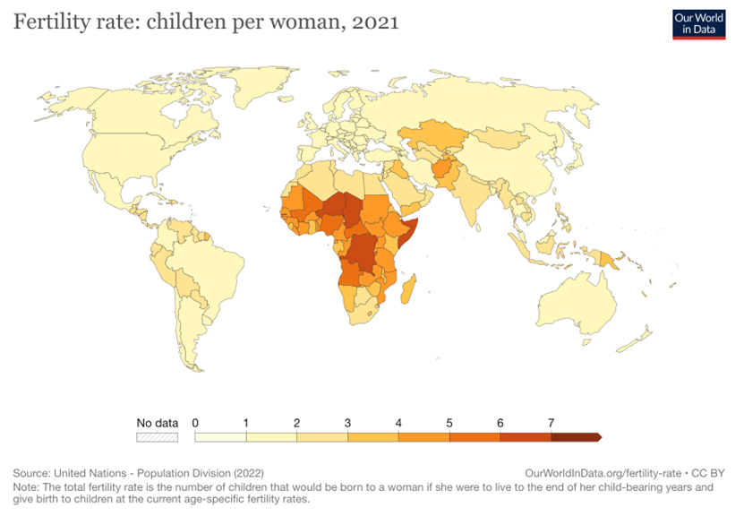
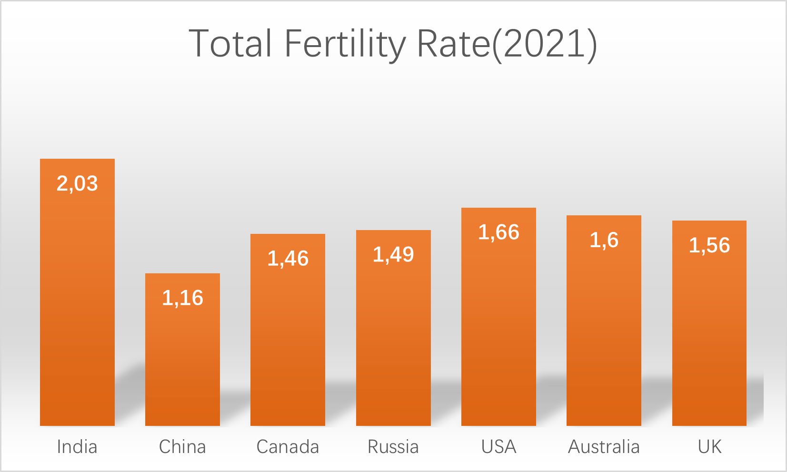

| Name | Country | Jump to |
|---|---|---|
| Harrison | China | Jump To Section |
| Joy | Africa | Jump To Section |
| Rose | India | Jump To Section |
| Alice | Country name | Jump To Section |
Made By: Harrison, Rose, Alice
Read MoreThe total fertility rate is the number of children that would be born to the average woman if she were to continue having children until the end of her childbearing years and do so at the current age-specific fertility rates.

figure from: https://ourworldindata.org/fertility-rate
According to the figure, the global average fertility rate is around 1.5~2 children per woman today (except Africa). However, during much of our history, the average woman had at least five children, and sometimes even more. The number fluctuated throughout time, and there were notable disparities between nations. The fluctuate and differentiation of fertility rate within different country are due to the varied culture in different country. This is because people don't simply have the children they do because of their own pursuit of happiness, financial gain, or simple biology; rather, it's because of the way that culture and value systems have shaped their behaviors.
This passage will discuss the how does culture affect people’s concept of fertility in different nations and continents (include China, Africa, America, and India). We will do this by evaluating the fertility rate, the tradition, people’s consciousness, and some other external and internal factor in different regions.
| Name | Country | Jump to |
|---|---|---|
| Harrison | China | Jump To Section |
| Joy | Africa | Jump To Section |
| Rose | India | Jump To Section |
| Alice | Country name | Jump To Section |
Image source: Hector Retamal/App/Getty Images
China is a country with a long-standing traditional culture and this culture has had a profound impact on all aspects of the country, including fertility rates. The traditional culture of family, Confucianism and moral values have all influenced the fertility attitudes and behaviours of the Chinese people to some extent. The most recent census put the total population of the country at 141,178,000 in 2021. This is an increase of 72.06 million people or an average annual growth rate of 0.53% compared to 133.97 million people in 2010. This represents an era of low growth for China's population, which has declined even more in the last two years.
Firstly, the family concept in traditional Chinese culture places great importance on the importance of children, especially the value of sons. In some extreme traditional families, sons can inherit the family business and continue the family legacy, while daughters are often seen as 'money losers'. This grossly unequal mindset has led some extreme traditional families to place an overwhelming need for sons at the expense of daughters, and even to force women to have multiple pregnancies and deliveries until they have a son before they can stop being pregnant. According to the 2019 data the most imbalanced age groups for the sex ratio between men and women in China are 10-14 years old (119.10) and 15-19 years old (118.39), but in the absence of artificial interference the sex ratio at birth should be relatively stable, with variations ranging from 103 to 107. The number of men and women in the marriageable age population will be roughly equal. If the sex ratio at birth is chronically, consistently and significantly above 107, it is a very abnormal phenomenon, suggesting the existence of artificial foetal sex selection, a bias that has a negative impact on China's fertility rate. In contrast, the data from the seventh census show a sex ratio of (115.03) for males and females aged 10 to 14 and (116.13) for males and females aged 15 to 19, which has begun to gradually decline compared to the 2019 data, which is a good sign and proves that traditional culture and bad habits have become less and less influential on people.
Secondly, Confucianism, a traditional Chinese culture, has also influenced the Chinese people's perception of fertility. Confucianism emphasises the importance of the family, especially the responsibilities and duties of both men and women, and the idea that having children is part of family responsibility. This thinking has prompted the Chinese to place importance on childbearing in marriage and family in order to assume their own family responsibilities and duties. Young couples naturally consider the marginal costs and benefits of having a child when considering whether to have and raise a child, but as society develops from an agrarian to an industrial society, the ratio of marginal benefits to marginal costs of having a child is decreasing. With this comes a decline in fertility, and the Confucian concept of the family has become less and less influential on the youth of today as time progresses.
Finally, the moral values of traditional Chinese culture have also had an impact on fertility rates. Traditional Chinese moral values emphasise the importance of "marriage for men and marriage for women" and encourage people to marry and have children at a young age. In addition, traditional moral values also emphasise the importance of having many children, believing that having more children will bring more blessings to the family. All these concepts have influenced the Chinese people's perception of fertility. In traditional agrarian societies, having more children meant a rise in the most substantial labour force, and it was clearly not worthwhile to devote the energy of raising two children to raising one, so there was a greater tendency to have more children, so that before 1974, the average Chinese woman would have four to five children, and in 1963 even the average Chinese woman would have seven to eight children. In modern times, however, if the strategy of having more children and raising them at a lower level is continued, it will not actually bring about an apparent change in the family situation, but by concentrating on raising one or two quality children through eugenics, it will still be possible to make the class leap through the Gao Kao and, because the current state of the Chinese population in the 1970s and 1980s was characterised by a large population base but low quality. To address the range of implications of overpopulation, the state introduced the one-child policy. Between 1979 and 2016, increasingly fierce social competition and the exposure of the people to new ideas led them to gradually begin to break free from traditional ideas and to choose the number of children they would have based on their personal and social realities.
The population of Africa began to grow rapidly at the end of the 20th century. In the 1950s, the region had only 180 million people, only one-third of the population of Europe. By 2017, Africa's population had risen to 1.25 billion. According to United Nations projections, by 2050, the population of sub Saharan Africa alone will reach around 2.2 billion, three times the population of the entire European continent. Almost all of the top 20 countries in the global fertility rankings are in Africa
In 1913, Africa accounted for only 7% of the global population, but it is estimated that by 2100 it will account for 39.4% of the world's population.
And it is the only region on all continents where fertility rates are rising. Five years ago, Africa's fertility rate was only 4.5, but now it has reached 6.2. This means that on average, a woman of childbearing age in Africa will have at least 6.2 children, which is definitely more. Why? Because medical care in Africa is extremely backward, and fertility statistics only measure the number of live babies.
So why is African growing so fast? What is the root cause of the high fertility rate？This has a lot to do with their culture.
First, let us understand some reasons for the rapid population growth in Africa.
There are several main reasons for this. The first is the low standard of living.
Although Africans are spread all over the world, their main body is still in Africa. Africa is very poor, so the fertility rate is very high.
This is because in poor areas, in order to maintain the existence of race, it is necessary to continuously increase a large number of people. Due to reasons such as premature death rates and war, they must have more children to ensure the continuation of race.
This is actually very similar to ancient China because of poverty, high premature death rates, and frequent wars. Therefore, each family has many children. Not to mention before, even after the founding of New China, the population also experienced explosive growth.
Second, the quality level is relatively low.
Africa is very poor, which leads to low levels of education and difficult development of advanced social concepts. We know that with the continuous improvement of living standards and the overall quality of society, the fertility rate is gradually declining.
After material satisfaction, more people gradually pursue spiritual prosperity, and the improvement of the overall quality of society will also enable more people to pursue spiritual life. There is no doubt that this will have a serious impact on fertility.
The most typical example is developed countries in Europe and the United States, where fertility rates continue to decline, while around us, Japan, South Korea, Singapore, and Russia have all encountered this problem. In China, the fertility rate is also gradually decreasing.
Third, the help of the world.
The fundamental reason is that the African region is poor, and various parts of the world generally provide medical care, improve health services, donate food and living materials to Africa. With the help of the outside world, African countries have gradually moved from war to stability.
The result of this behavior is that the fertility rate remains unchanged, but the mortality rate due to premature death, war, disease, and other reasons has decreased significantly. This has led to a rapid accumulation of African population and an explosive growth in the number of African.
In addition to these reasons, there is also a great relationship between African culture, especially the religion part.
Africans have three religious beliefs, namely, indigenous religion, Islam, and Christianity.
The indigenous religions in Africa include nature worship, totem worship, ancestor worship, deity worship, and leader worship. There are also some dances around these worship, such as the African Bushman people who believe in the moon, and they sing and dance when the full moon appears. When the Nama people in Africa perform the rain dance, they place the viscera of cattle and sheep on a fire and pierce it with a stick to allow the liquid to flow out. At the same time, they pour milk and grease onto the fire, causing the flames to burst into the sky. At this time, people dance and pray for rain to bless the rich pasture.
African black simulated animal totem dances often carry the meaning of praying for population growth and lush plants.
From this, it can be seen that the growth of Africa's population and religious culture are inextricably linked, even a significant part of the reason.

Image Source: United Nations - Population Division (2022)
Comparing FTR in India with other main countries, we can see that the TFR in India is significantly higher than that of other countries, and that is the impression most people have of India's fertility rate. Moreover, China has a land area of 9.6 million square kilometers and a population of about 1.4 billion; India has a land area of 2.98 million square kilometers and is much less than one-third of China's, but its population is also 1.4 billion, which due to India's high fertility rate.
So, what accounts for India's high fertility rate?
India is a big religious country, almost everyone has their own denomination, and they. are so diverse that Hinduism is basically called the state religion of India. Because 83% of India's population is Hindu, the second largest religion after India is Islam, accounting for 13.4% of India's total population. However, due to the reasons of religious belief and social and historical development, some customs in the traditional Indian culture are contrary to the modern society, resulting in some people's views on fertility that do not meet the requirements of the society. For example, Hinduism requires women to have at least four children, while Islam allows men to have up to four wives. This relatively primitive conception of fertility permeated Indian life along with religious doctrines, which often prevented India from practicing family planning.
Although India has always claimed to be a democracy, their political groups tend to be on the same side for ethnic or religious reasons, seeking political "shares" based on population numbers - The more people a group has, the more votes they have and the more religious the political advantage they have. Because Hinduism believes in animism and equality of all things, it believes that having a certain number of people does not violate the principle of religious belief but is conducive to promoting social harmony and stability. In addition, India's large population is good for the economy. So Indians like to have more children and use the population to grow their ranks to better fight between political and ethnic struggles.
India has been pushing sexism to its limits at a time when "birth is the same for men and women". Because in the traditional Hindu tradition, men are the sparks of the family line and women are the tools of the family line. Also, when the old man dies for cremation, the boys must light firewood, or the souls of the dead will not go to heaven. In traditional Hindu culture, boys are regarded as symbols of life and happiness. And boys are often one of the most important assets in a family. But with population growth and social progress, the proportion of women in India is shrinking. This has made religious and reincarnation India so obsessed with having sons that if a daughter is born first, it must continue until a boy is born, and the more boys the better, thus creating such high fertility rates.
You may have heard the saying, "The poorer you are, the poorer you are." This is a biased statement, but it can be used to sum up some of the fertility phenomena in India, why do some people still have children when they cannot feed themselves? Why are some of India's poor still able to have children and grow up? The answer is simple: poverty. Condoms are one of the great inventions in the field of family planning, but the price of condoms is as low as $1. Many poor Indians cannot afford rice, so how can they "waste" their money on such "fashionable" disposable items? India's poor don't want to spend money on effective contraception, but they can't control their primal urges, get pregnant unplanned and can't afford to go to hospital to check the sex of a foetus. So being poor does not stop India's slums from welcoming newborns. Furthermore, even today, many parts of India do not know what condoms are, and many people know and will not use them. On the one hand, sex is a taboo subject in society, and on the other, India idolizes reproduction and considers contraception to be an "evil" method.
Parts of the world that are too hot and too cold do not have too many people, and India is just in a mild climate suitable for living. The Ganges and Indus rivers are fertile, suitable for farming and less prone to disasters. As a result, food production is high enough to support the survival of a large population.
In general, there are many factors that contribute to India's high fertility rate, including the local traditional preference for sons, religious beliefs, the whole society's idea of female reproduction, the local people's economic situation and favorable climate and geographical conditions.
Credits:
Information Cited from several sources
Webpage design copyright @ Richard Hartono
This is a School project for Global Perspectives.